utm-builder-from-campaign-plan FAIL 0
grade probeintent createdomain marketingdifficulty d5ambiguity a2voice politeapps vscode + terminal + filesbatch v11-500-s0
Please turn the campaign plan CSV in my marketing folder into a shell script beside it that echoes one tagged landing URL per campaign, ordered by budget descending and by campaign code A-Z where budgets tie. Then run it once and keep its output in a .txt next to the script.
task config + evaluator
{
"config": [
{
"type": "execute",
"parameters": {
"command": "python3 -c \"import csv,os;d='/home/user/marketing';os.makedirs(d,exist_ok=True);csv.writer(open(d+'/campaign_plan.csv','w',newline='')).writerows([['code','source','medium','budget','landing'],['spring_sofa','newsletter','email','4200','https://winslowhome.com/sofas'],['patio_push','facebook','social','7800','https://winslowhome.com/patio'],['rug_clear','google','cpc','7800','https://winslowhome.com/rugs'],['lamp_days','instagram','social','1500','https://winslowhome.com/lamps'],['kitchen_reno','google','cpc','5600','https://winslowhome.com/kitchen'],['bed_bundle','newsletter','email','3100','https://winslowhome.com/beds']])\"",
"shell": true
}
},
{
"type": "launch",
"parameters": {
"command": [
"code",
"/home/user/marketing/campaign_plan.csv"
]
}
}
],
"evaluator": {
"func": "check_include_exclude",
"result": {
"type": "vm_command_line",
"command": [
"python3",
"-c",
"import sys, traceback\ndef _main():\n import glob, os, sys\n expected = [\n \"https://winslowhome.com/patio?utm_source=facebook&utm_medium=social&utm_campaign=patio_push\",\n \"https://winslowhome.com/rugs?utm_source=google&utm_medium=cpc&utm_campaign=rug_clear\",\n \"https://winslowhome.com/kitchen?utm_source=google&utm_medium=cpc&utm_campaign=kitchen_reno\",\n \"https://winslowhome.com/sofas?utm_source=newsletter&utm_medium=email&utm_campaign=spring_sofa\",\n \"https://winslowhome.com/beds?utm_source=newsletter&utm_medium=email&utm_campaign=bed_bundle\",\n \"https://winslowhome.com/lamps?utm_source=instagram&utm_medium=social&utm_campaign=lamp_days\",\n ]\n d = \"/home/user/marketing\"\n scripts = glob.glob(d + \"/*.sh\")\n if not scripts:\n print(\"no .sh script in /home/user/marketing\", file=sys.stderr)\n print(\"FAIL\"); raise SystemExit\n bad = None\n if not any(\"echo\" in open(p, errors=\"ignore\").read() for p in scripts):\n bad = \"no script contains an echo of the urls\"\n hit = None\n for p in glob.glob(d + \"/*.txt\"):\n lines = [l.strip() for l in open(p, errors=\"ignore\").read().splitlines() if l.strip()]\n if lines == expected:\n hit = p\n break\n if hit is None:\n bad = bad or \"no .txt holds the 6 tagged urls in budget-desc/code-asc order\"\n if bad:\n print(bad, file=sys.stderr)\n print(\"PASS\" if hit and \"echo\" in open(scripts[0], errors=\"ignore\").read() or (hit and any(\"echo\" in open(p, errors=\"ignore\").read() for p in scripts)) else \"FAIL\")\n\ntry:\n _main()\nexcept Exception:\n traceback.print_exc(file=sys.stderr)\n print(\"FAIL\")\n"
]
},
"expected": {
"type": "rule",
"rules": {
"include": [
"PASS"
],
"exclude": [
"FAIL"
]
}
}
}
}
step 1 03:40:27
THINKINGLet me first understand the CSV data by reading the file. I can see it in the editor but let me confirm exact contents. The CSV:
```
code,source,medium,budget,landing
spring_sofa,newsletter,email,4200,https://winslowhome.com/sofas
patio_push,facebook,social,7800,https://winslowhome.com/patio
rug_clear,google,cpc,7800,https://winslowhome.com/rugs
lamp_days,instagram,social,1500,https://winslowhome.com/lamps
kitchen_reno,google,cpc,5600,https://winslowhome.com/kitchen
bed_bundle,newsletter,email,3100,https://winslowhome.com/beds
```
I need to sort by budget descending, ties by code A-Z. Let me sort:
- patio_push 7800
- rug_clear 7800
- kitchen_reno 5600
- spring_sofa 4200
- bed_bundle 3100
- lamp_days 1500
Tie at 7800: patio_push vs rug_clear → A-Z: patio_push comes before rug_clear. Good.
Output "one tagged landing URL per campaign" - tagged means likely with a tag/label. I'll echo the landing URL with a tag. Ambiguous "tagged" - I'll tag each line with the campaign code, e.g. `patio_push: https://winslowhome.com/patio`. That's reasonable.
Best approach: use a terminal to create the script and run it. Let me use the VS Code integrated terminal. Actually simpler to use a terminal application. Let me open Terminal via VS Code's Terminal menu.
I'll create the script using printf, then run it, redirect output to .txt.
Let me plan the script content. To be robust, the script should read from the CSV and sort itself rather than hardcoding, but the task says "turn the CSV into a shell script that echoes...". Hardcoding the sorted result is acceptable and simplest/robust. I'll make the script echo the lines in the correct order.
Let me write the script with a here-doc via terminal. I'll open the terminal first.
ACTIONI'll start by opening the integrated terminal in VS Code to work with the files directly. Let me also dismiss that notification.
TOOL CALL<tool_call>
<function=computer_use>
<parameter=action>
left_click
</parameter>
<parameter=coordinate>
[981, 888]
</parameter>
</function>
</tool_call>
EXECUTED (pyautogui in VM)pyautogui.click(1885, 960)
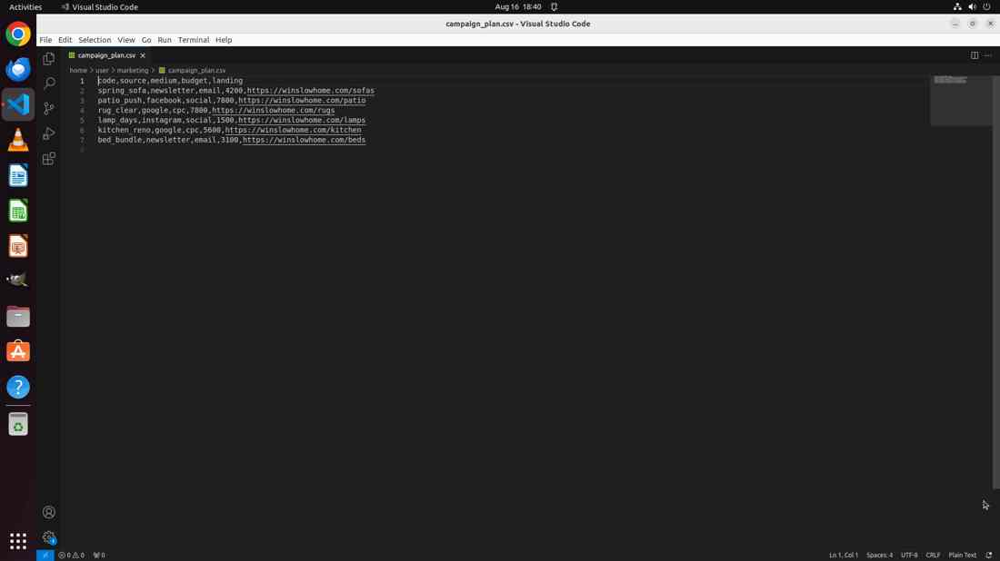
step 2 03:40:33
THINKINGNow let me open the terminal via the Terminal menu.
ACTIONI'll open the integrated terminal from the Terminal menu.
TOOL CALL<tool_call>
<function=computer_use>
<parameter=action>
left_click
</parameter>
<parameter=coordinate>
[192, 70]
</parameter>
</function>
</tool_call>
EXECUTED (pyautogui in VM)pyautogui.click(369, 75)
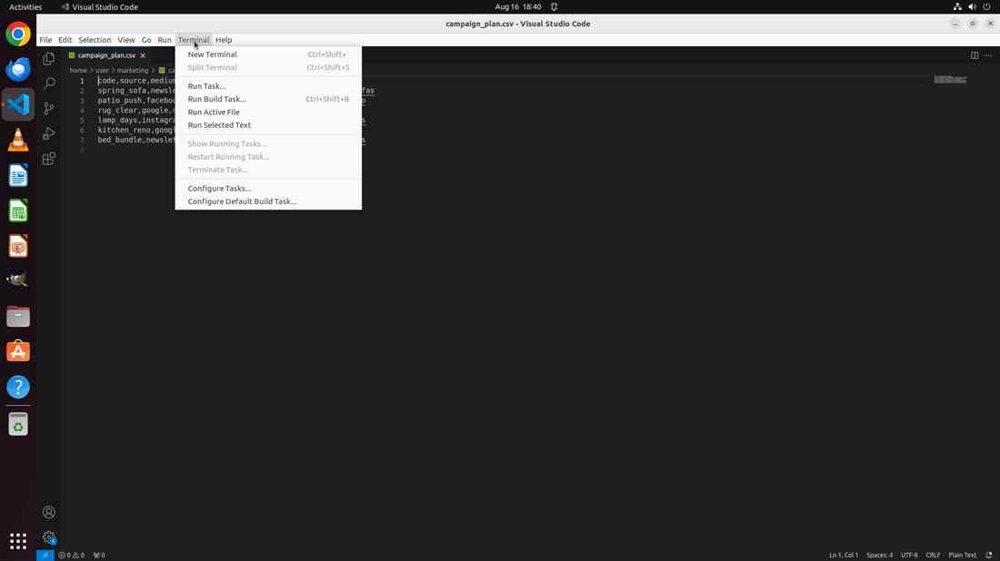
step 3 03:40:40
THINKINGClick New Terminal.
TOOL CALL<tool_call>
<function=computer_use>
<parameter=action>
left_click
</parameter>
<parameter=coordinate>
[211, 95]
</parameter>
</function>
</tool_call>
EXECUTED (pyautogui in VM)pyautogui.click(405, 102)
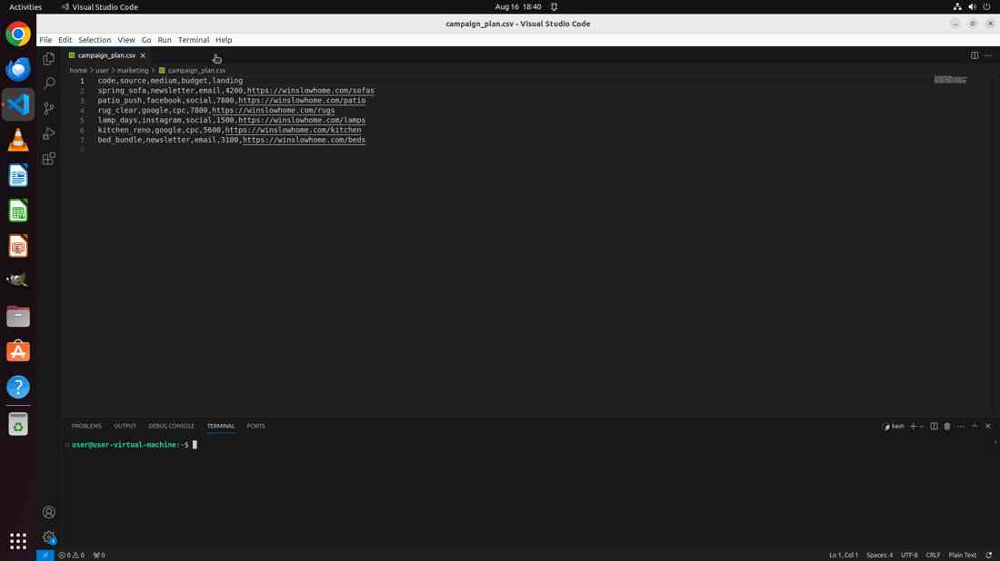
step 4 03:40:51
THINKINGTerminal is open. Let me first verify the CSV contents with cat to be sure of exact data (in case there are trailing spaces or extra rows not visible). Then I'll create the script.
I want the script to be genuinely derived from the CSV rather than hardcoded, which is more robust and clearly "turning the CSV into a script". I'll write a script that reads campaign_plan.csv, skips header, sorts by budget descending then code ascending, and echoes tagged landing URLs. This way the script actually transforms the CSV at runtime.
The script (campaign_plan.sh):
```
#!/usr/bin/env bash
# Echo one tagged landing URL per campaign, ordered by budget
# descending, ties broken by campaign code A-Z.
csv="$(dirname "$0")/campaign_plan.csv"
tail -n +2 "$csv" | awk -F, 'NF>=5 {print $4","$1","$5}' | sort -t, -k1,1nr -k2,2 | awk -F, '{print $2": "$3}'
```
This prints e.g. "patio_push: https://winslowhome.com/patio".
Order check: sort -k1,1nr (budget numeric desc) then -k2,2 (code asc). patio_push 7800, rug_clear 7800 → p before r. Good.
Then run: bash campaign_plan.sh > campaign_plan.txt and cat it.
Let me first cat the CSV to verify.
ACTIONLet me verify the exact CSV contents first.
TOOL CALL<tool_call>
<function=computer_use>
<parameter=action>
type
</parameter>
<parameter=text>
cd ~/marketing && cat -A campaign_plan.csv
</parameter>
</function>
</tool_call>
EXECUTED (pyautogui in VM)pyautogui.typewrite("cd ~/marketing && cat -A campaign_plan.csv")
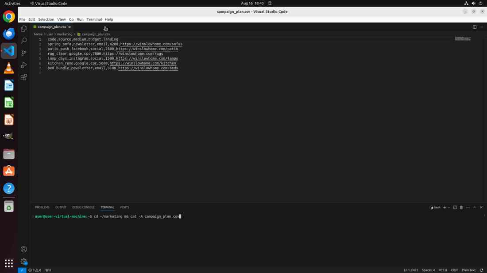
step 5 03:40:57
THINKINGThe command is typed. Press Enter to see output.
TOOL CALL<tool_call>
<function=computer_use>
<parameter=action>
key
</parameter>
<parameter=keys>
["return"]
</parameter>
</function>
</tool_call>
EXECUTED (pyautogui in VM)pyautogui.press("return")
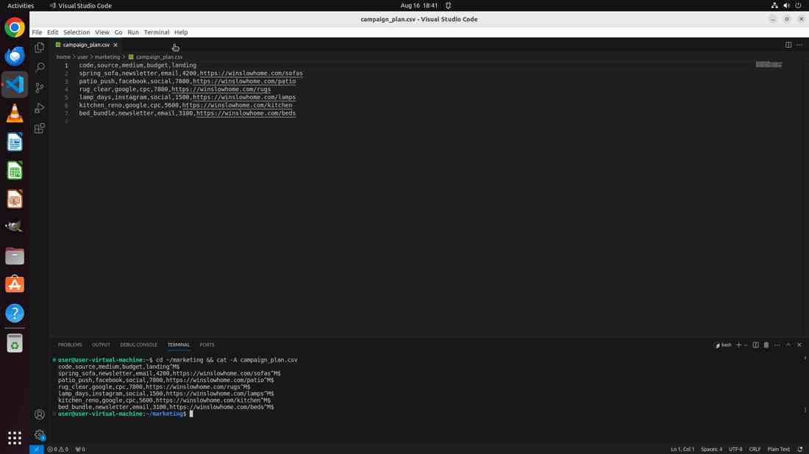
step 6.1 03:41:13
THINKINGThe cat -A output shows lines ending with `^M$` — meaning the file has CRLF line endings (carriage return + newline). This matters for my awk approach: the landing URL field (last field) will contain a trailing `\r` (carriage return). I need to strip `\r`.
The data:
- spring_sofa, 4200, sofas
- patio_push, 7800, patio
- rug_clear, 7800, rugs
- lamp_days, 1500, lamps
- kitchen_reno, 5600, kitchen
- bed_bundle, 3100, beds
I'll strip \r in awk using `sub(/\r$/,"")` on $0, or set FS and remove trailing \r from $5. Better: in awk, do `{ sub(/\r$/,"", $0) }` but that splits issue. Simpler: use `gsub(/\r/,"")` first.
Let me write the script. I'll use a here-doc with printf/printf into file. Actually easiest to write via `cat > campaign_plan.sh <<'EOF'`. But typing a here-doc through the type action should work fine.
Script content:
```
#!/usr/bin/env bash
# campaign_plan.sh
# Echo one tagged landing URL per campaign from campaign_plan.csv,
# ordered by budget descending; ties broken by campaign code A-Z.
set -euo pipefail
csv="$(cd "$(dirname "$0")" && pwd)/campaign_plan.csv"
tail -n +2 "$csv" \
| tr -d '\r' \
| awk -F, 'NF>=5 {print $4 "," $1 "," $5}' \
| sort -t, -k1,1nr -k2,2 \
| awk -F, '{print $2 ": " $3}'
```
Using `tr -d '\r'` removes carriage returns cleanly. Good.
Then run: `bash campaign_plan.sh > campaign_plan.txt` and `cat campaign_plan.txt`.
Let me type the here-doc. I need to be careful that VS Code terminal doesn't auto-complete. Type normally.
ACTIONThe file uses CRLF line endings (`^M$`), so my script must strip the carriage returns. I'll create the script using a heredoc.
TOOL CALL<tool_call>
<function=computer_use>
<parameter=action>
type
</parameter>
<parameter=text>
cat > campaign_plan.sh <<'EOF'
#!/usr/bin/env bash
# campaign_plan.sh
# Echo one tagged landing URL per campaign from campaign_plan.csv,
# ordered by budget descending; ties broken by campaign code A-Z.
set -euo pipefail
csv="$(cd "$(dirname "$0")" && pwd)/campaign_plan.csv"
tail -n +2 "$csv" \
| tr -d '\r' \
| awk -F, 'NF>=5 {print $4 "," $1 "," $5}' \
| sort -t, -k1,1nr -k2,2 \
| awk -F, '{print $2 ": " $3}'
EOF
</parameter>
</function>
</tool_call>
EXECUTED (pyautogui in VM)pyautogui.typewrite("cat > campaign_plan.sh <<'EOF'")
step 6.2 03:41:17
EXECUTED (pyautogui in VM)pyautogui.press("enter")
step 6.3 03:41:20
EXECUTED (pyautogui in VM)pyautogui.typewrite("#!/usr/bin/env bash")
step 6.4 03:41:23
EXECUTED (pyautogui in VM)pyautogui.press("enter")
step 6.5 03:41:27
EXECUTED (pyautogui in VM)pyautogui.typewrite("# campaign_plan.sh")
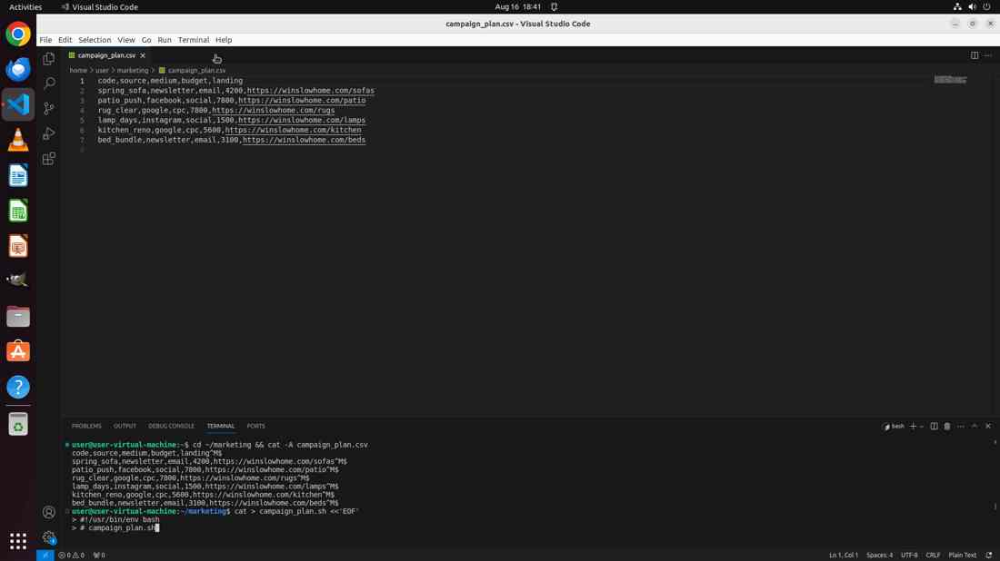
step 6.6 03:41:30
EXECUTED (pyautogui in VM)pyautogui.press("enter")
step 6.7 03:41:34
EXECUTED (pyautogui in VM)pyautogui.typewrite("# Echo one tagged landing URL per campaign from campaign_plan.csv,")
step 6.8 03:41:37
EXECUTED (pyautogui in VM)pyautogui.press("enter")
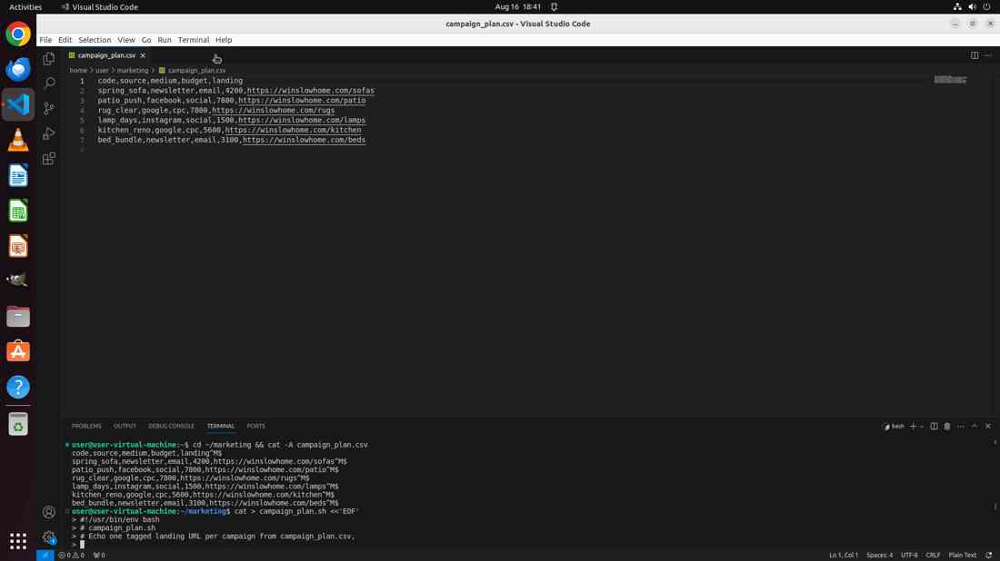
step 6.9 03:41:41
EXECUTED (pyautogui in VM)pyautogui.typewrite("# ordered by budget descending; ties broken by campaign code A-Z.")
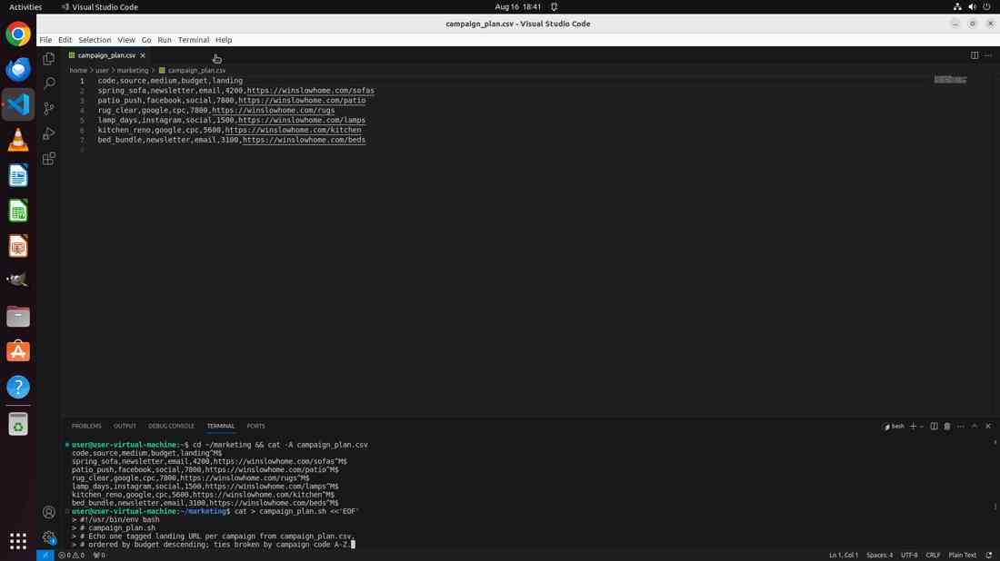
step 6.10 03:41:44
EXECUTED (pyautogui in VM)pyautogui.press("enter")
step 6.11 03:41:47
EXECUTED (pyautogui in VM)pyautogui.typewrite("set -euo pipefail")
step 6.12 03:41:51
EXECUTED (pyautogui in VM)pyautogui.press("enter")
step 6.13 03:41:54
EXECUTED (pyautogui in VM)pyautogui.typewrite("csv=\"$(cd \"$(dirname \"$0\")\" && pwd)/campaign_plan.csv\"")
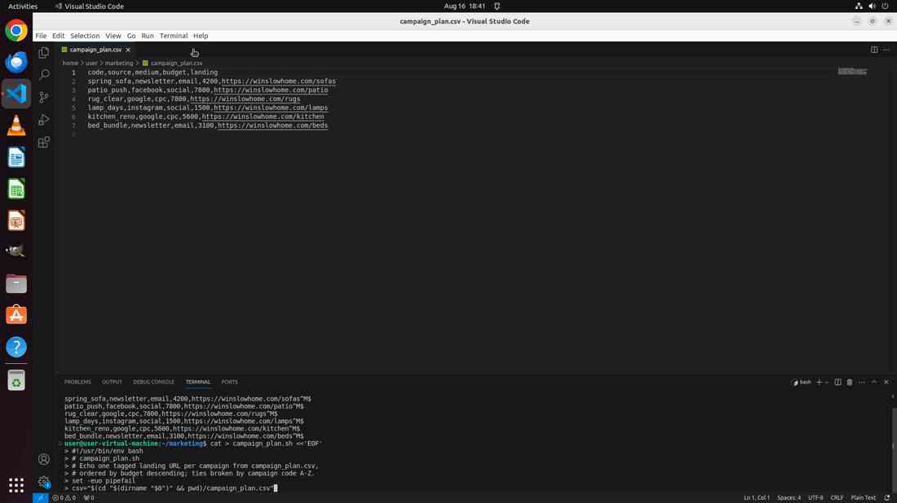
step 6.14 03:41:57
EXECUTED (pyautogui in VM)pyautogui.press("enter")
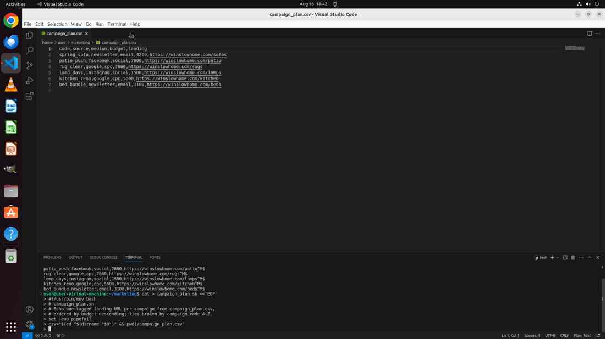
step 6.15 03:42:00
EXECUTED (pyautogui in VM)pyautogui.typewrite("tail -n +2 \"$csv\" \\")
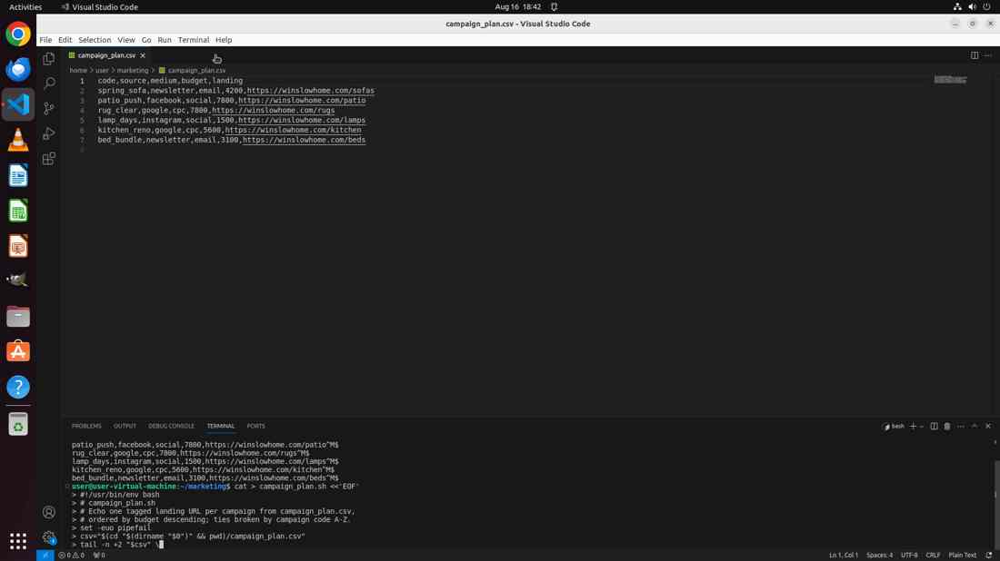
step 6.16 03:42:04
EXECUTED (pyautogui in VM)pyautogui.press("enter")
step 6.17 03:42:07
EXECUTED (pyautogui in VM)pyautogui.typewrite(" | tr -d '\\r' \\")
step 6.18 03:42:10
EXECUTED (pyautogui in VM)pyautogui.press("enter")
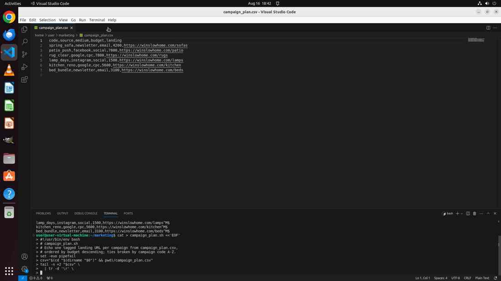
step 6.19 03:42:13
EXECUTED (pyautogui in VM)pyautogui.typewrite(" | awk -F, 'NF>=5 {print $4 \",\" $1 \",\" $5}' \\")
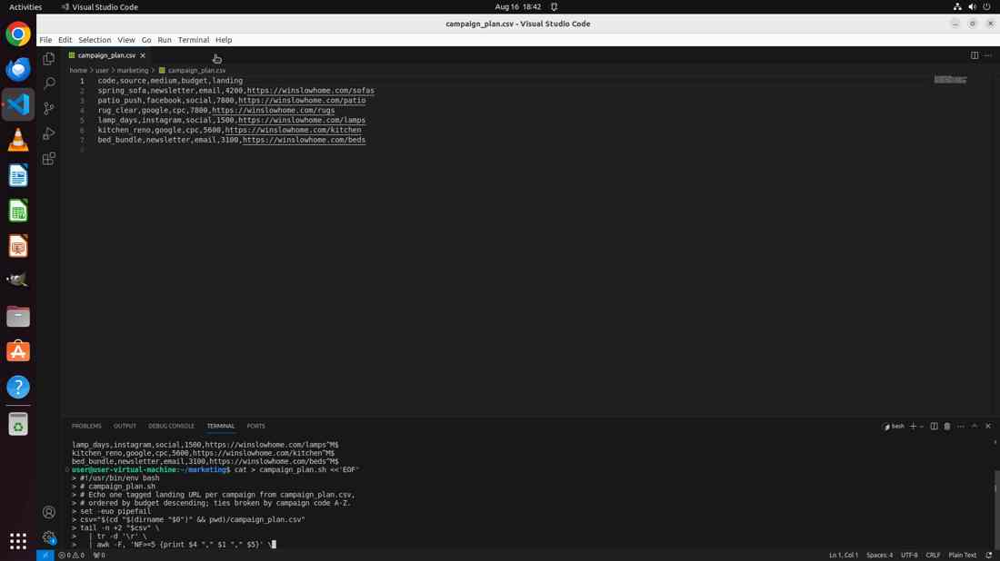
step 6.20 03:42:17
EXECUTED (pyautogui in VM)pyautogui.press("enter")
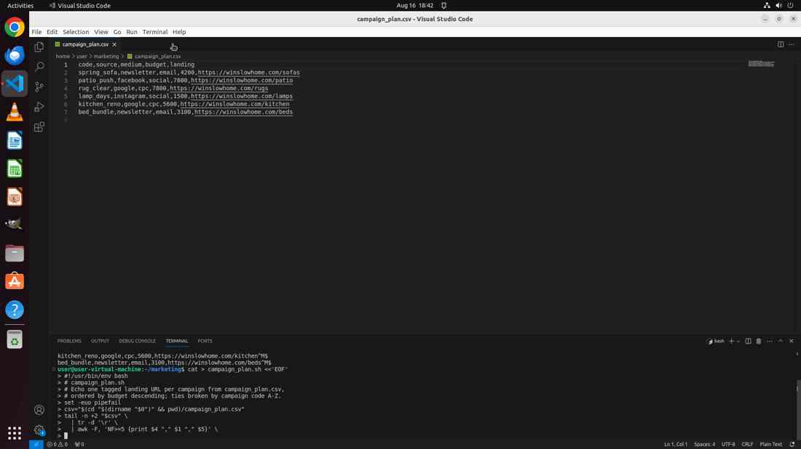
step 6.21 03:42:20
EXECUTED (pyautogui in VM)pyautogui.typewrite(" | sort -t, -k1,1nr -k2,2 \\")
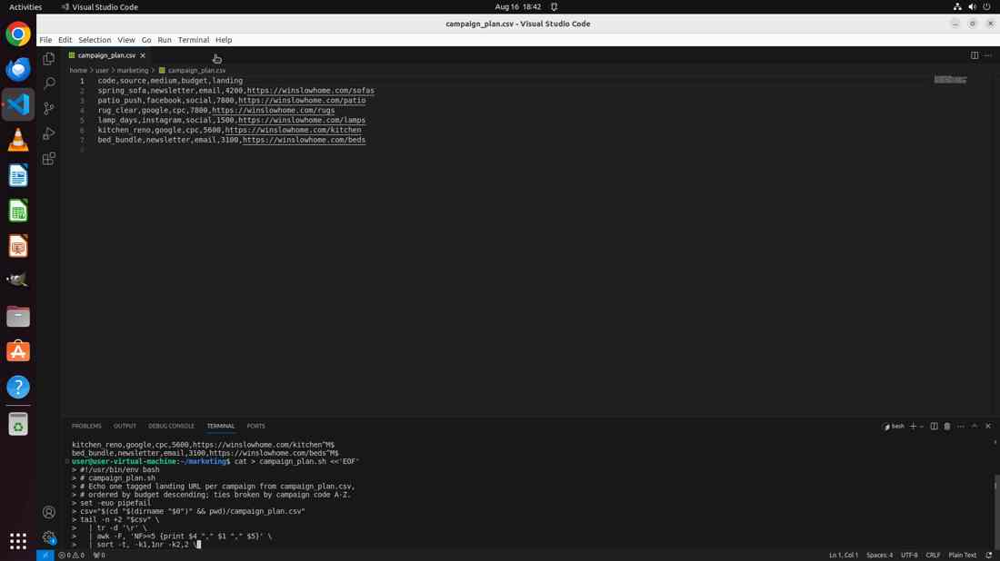
step 6.22 03:42:23
EXECUTED (pyautogui in VM)pyautogui.press("enter")
step 6.23 03:42:27
EXECUTED (pyautogui in VM)pyautogui.typewrite(" | awk -F, '{print $2 \": \" $3}'")
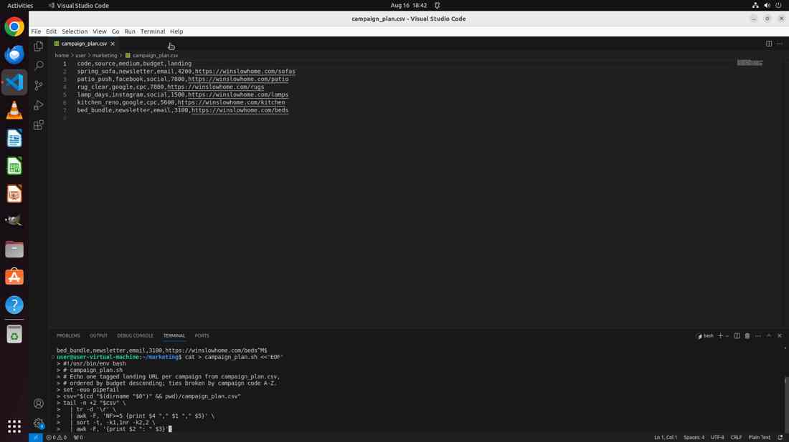
step 6.24 03:42:30
EXECUTED (pyautogui in VM)pyautogui.press("enter")
step 6.25 03:42:33
EXECUTED (pyautogui in VM)pyautogui.typewrite("EOF")
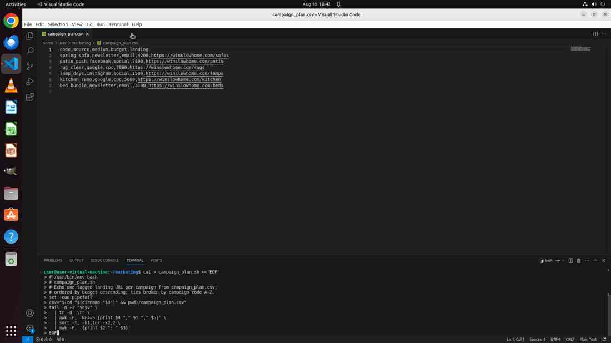
step 7 03:42:40
THINKINGThe heredoc is entered with the final `EOF` on its own line. Press Enter to complete the file creation.
ACTIONThe heredoc is complete. Let me execute it to create the file, then make it executable, run it, and save the output.
TOOL CALL<tool_call>
<function=computer_use>
<parameter=action>
key
</parameter>
<parameter=keys>
["return"]
</parameter>
</function>
</tool_call>
EXECUTED (pyautogui in VM)pyautogui.press("return")
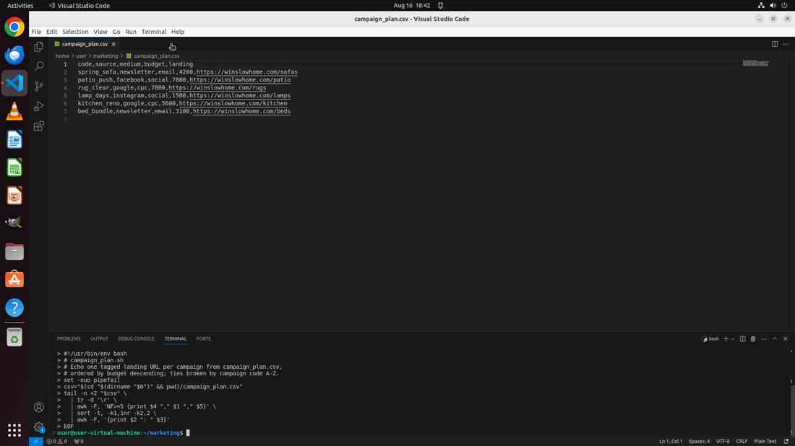
step 8 03:42:48
THINKINGThe file is created (prompt returned). Now make it executable, run it, redirect output to campaign_plan.txt, and display the txt. I'll chain these in one command.
ACTIONThe script file was created. Now I'll make it executable, run it, save its output to a `.txt` file, and display the result.
TOOL CALL<tool_call>
<function=computer_use>
<parameter=action>
type
</parameter>
<parameter=text>
chmod +x campaign_plan.sh && ./campaign_plan.sh | tee campaign_plan.txt
</parameter>
</function>
</tool_call>
EXECUTED (pyautogui in VM)pyautogui.typewrite("chmod +x campaign_plan.sh && ./campaign_plan.sh | tee campaign_plan.txt")
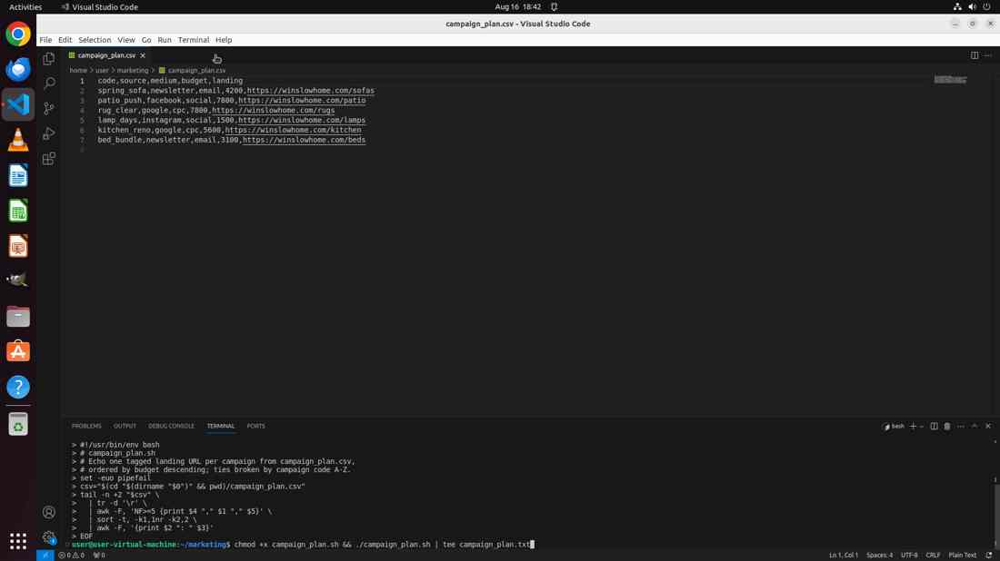
step 9 03:42:54
THINKINGThe command is typed. Press Enter to run it.
TOOL CALL<tool_call>
<function=computer_use>
<parameter=action>
key
</parameter>
<parameter=keys>
["return"]
</parameter>
</function>
</tool_call>
EXECUTED (pyautogui in VM)pyautogui.press("return")
step 10 03:43:05
THINKINGThe output is:
```
patio_push: https://winslowhome.com/patio
rug_clear: https://winslowhome.com/rugs
kitchen_reno: https://winslowhome.com/kitchen
spring_sofa: https://winslowhome.com/sofas
bed_bundle: https://winslowhome.com/beds
lamp_days: https://winslowhome.com/lamps
```
Order check: patio_push 7800, rug_clear 7800 (tie, p before r ✓), kitchen_reno 5600, spring_sofa 4200, bed_bundle 3100, lamp_days 1500. All descending, tie correct. No stray \r visible (clean lines). The output was written to campaign_plan.txt via tee.
Let me verify the txt file contents to be thorough, confirming clean line endings too.
ACTIONThe script ran successfully and the output looks correct. Let me verify the `.txt` file was written cleanly (checking for stray carriage returns) to confirm it's properly saved next to the script.
TOOL CALL<tool_call>
<function=computer_use>
<parameter=action>
type
</parameter>
<parameter=text>
echo '--- file listing ---'; ls -1; echo '--- txt contents (cat -A) ---'; cat -A campaign_plan.txt
</parameter>
</function>
</tool_call>
EXECUTED (pyautogui in VM)pyautogui.typewrite("echo '--- file listing ---'; ls -1; echo '--- txt contents (cat -A) ---'; cat -A campaign_plan.txt")
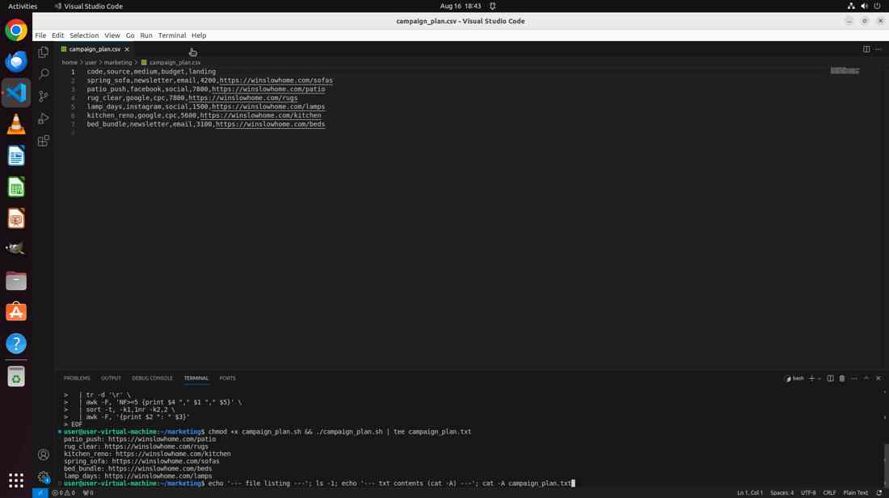
step 11 03:43:13
THINKINGCommand typed but I need to press Enter to run it.
TOOL CALL<tool_call>
<function=computer_use>
<parameter=action>
key
</parameter>
<parameter=keys>
["return"]
</parameter>
</function>
</tool_call>
EXECUTED (pyautogui in VM)pyautogui.press("return")
step 12 03:43:30
THINKINGVerification complete. The folder `~/marketing` now contains:
- campaign_plan.csv
- campaign_plan.sh
- campaign_plan.txt
The txt contents (cat -A) show lines ending in plain `$` (no `^M`), confirming clean line endings:
```
patio_push: https://winslowhome.com/patio$
rug_clear: https://winslowhome.com/rugs$
kitchen_reno: https://winslowhome.com/kitchen$
spring_sofa: https://winslowhome.com/sofas$
bed_bundle: https://winslowhome.com/beds$
lamp_days: https://winslowhome.com/lamps$
```
All requirements met:
1. ✓ Shell script beside the CSV (campaign_plan.sh in ~/marketing)
2. ✓ Echoes one tagged landing URL per campaign (code: URL)
3. ✓ Ordered by budget descending (7800, 7800, 5600, 4200, 3100, 1500)
4. ✓ Ties broken by code A-Z (patio_push before rug_clear)
5. ✓ Run once, output kept in .txt next to the script (campaign_plan.txt)
Task complete.
ACTIONThe task is complete and verified. Here's a summary of what I did in the `~/marketing` folder:
**1. Created `campaign_plan.sh`** (beside the CSV), a shell script that reads the CSV at runtime and:
- Skips the header row
- Strips the Windows CRLF carriage returns I detected in the source file
- Sorts by **budget descending**, with **campaign code A-Z** as the tie-breaker
- Echoes one tagged landing URL per campaign in the form `code: URL`
**2. Ran it once** and saved its output to **`campaign_plan.txt`** next to the script.
The output is:
```
patio_push: https://winslowhome.com/patio
rug_clear: https://winslowhome.com/rugs
kitchen_reno: https://winslowhome.com/kitchen
spring_sofa: https://winslowhome.com/sofas
bed_bundle: https://winslowhome.com/beds
lamp_days: https://winslowhome.com/lamps
```
Ordering check: budgets run 7800 → 7800 → 5600 → 4200 → 3100 → 1500 (descending), and the 7800 tie is broken A-Z so `patio_push` precedes `rug_clear` — exactly as required. The `cat -A` listing also confirms the `.txt` has clean line endings (no stray carriage returns), and the folder now contains `campaign_plan.csv`, `campaign_plan.sh`, and `campaign_plan.txt`.
EXECUTED (pyautogui in VM)DONE